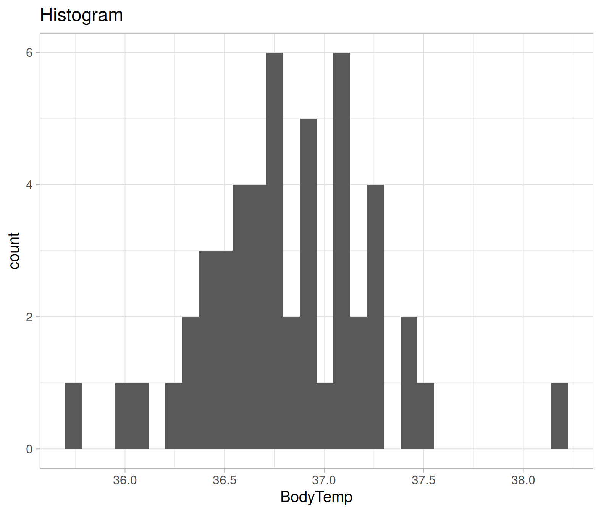
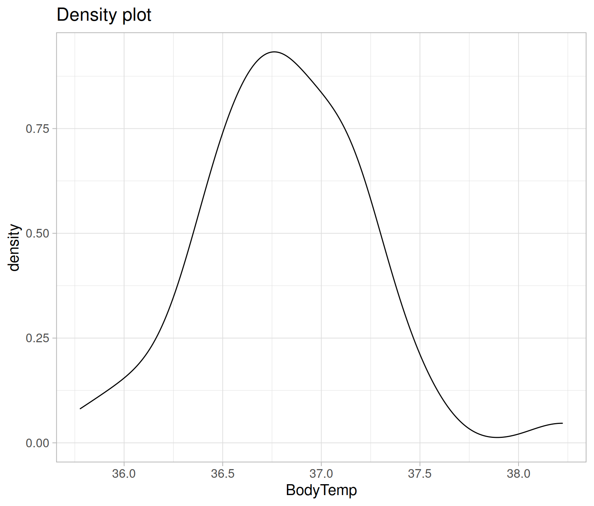
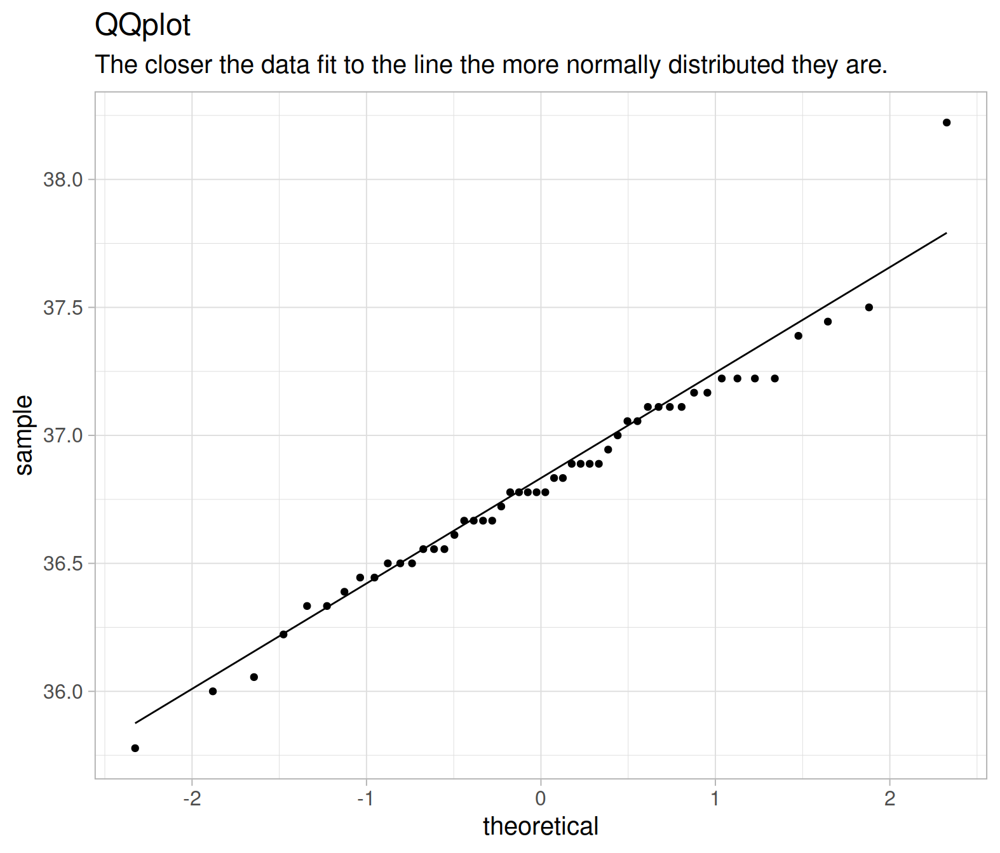

One Sample Mean test
- Understand the t-test for one mean.
- Understand the t distribution and the concept of degrees of freedom.
- Understand how to assess normality.
A one-sample t-test is a statistical procedure to test whether or not the mean of a population is equal to some value (NB: check week 11 if you’re rusty on the difference between populations, samples etc. https://uoepsy.github.io/dapr1/labs/11_sampling_distributions.html). The population mean may not be known, but sometimes it is hypothesised. Examples when you would use a one-sample t-test include:
- Is the average weight of a dog greater than 20kg?
- Is the mean body temperature not equal to 37 degrees C?
- On the Beck Depression Inventory (BDI), a score of >25 is considered clinical diagnosis of depression. Is the average score of our population of interest (for instance, people with a specific disease) significantly above this cutoff?
One-sample t-test formula
Null hypothesis
A one-sample t-test always has the null hypothesis:
\[ H_0: \mu = \mu_0 \]
I.e. the population mean is equal to some hypothesised value of \(\mu_0\).
Alternative hypotheses
The alternative hypotheses can be two-sided, or one-sided (left-tailed or right-tailed).
\(H_1 (two-sided): \mu \neq \mu_0\) (population mean is not equal to some hypothesised value \(\mu_0\))
\(H_1 (left-tailed): \mu < \mu_0\) (population mean is less than some hypothesised value \(\mu_0\))
\(H_1 (right-tailed): \mu > \mu_0\) (population mean is greater than some hypothesised value \(\mu_0\))
t-test formula
\[t = \frac{(\overline{x} - \mu_0)}{(s/\sqrt{n})} \]
where
- \(\overline{x}\) = sample mean
- \(\mu_0\) = hypothesised value
- \(s\) = standard deviation of the sample
- \(n\) = sample size
As we have produced a sample, we are using the sample statistics to estimate the population parameters. When the population standard deviation (\(\sigma\)) is unknown, we estimate it using the sample standard deviation (\(s\)).
t-distribution
The T distribution is a family of distributions that look almost identical to the normal distribution. The t-distribution is used instead of the normal distribution when working with small sample sizes (<30). The larger the sample size, the more the t-distribution will look like the normal distribution.
The particular shape of the \(t\)-distribution is determined by the degrees of freedom.
You can see the \(t\)-distribution for different degrees of freedom below.
Notice that as the degrees of freedom (\(\nu\) in the plot below) gets bigger (so as \(n\) gets bigger), the more the \(t\)-distibution fits a normal distribution.

(Source: https://en.wikipedia.org/wiki/Student%27s_t-distribution)
Degrees of freedom
Degrees of freedom are the number of independent observations in a set of data. When we are estimating a mean from a single sample, the degrees of freedom is equal to the sample size minus one (\(n-1\)).
This means that the sampling distribution of \(t\)-statistics from samples of size 10, would follow a \(t\)-distribution with \(10-1\) degrees of freedom.
Why do we subtract 1 from the number of observations?1
Degrees of freedom can alternatively be seen as the number of values that are free to vary in a data set. For example, if we have 3 sets of numbers which have a mean of 10:
- \(a\): {9,10,11}
- \(b\): {8,10,12}
- \(c\): {5,10,15}
Once you have chosen the first two numbers in the set, the third number is fixed. I.e. you cannot choose the third item in the set. If you choose set \(a\), once you’ve chosen numbers 9 and 10, the next number must be 11 in order to get a mean of 10. The only numbers that are free to vary are the first two, thus the degrees of freedom for a set of three numbers, is two.
Critical values and significance
In order to test the significance of a given \(t\)-statistic, we need to assess the probability of obtaining our \(t\)-statistic (or one at least as extreme) against a \(t\)-distribution with degrees of freedom \(n-1\).
We can do this in R using the pt() function with pt(x, df).
Remember that we have used the function pnorm(x, mean, sd) to compute the area to the left of x in a normal curve centred at mean and having standard deviation sd.
Similarly, pt(x, df) computes the area to the left of x in a \(t\)-distribution curve with degrees of freedom df.
Looking at the plot above, for a \(t\)-distribution with degrees of freedom of 5 (the blue line), what proportion of the curve is to the left of -2?
We can also find the critical values of a \(t\)-distribution using the function qt(p, df). This will return the values of \(t\) for which \(p\) of the distribution lies to the left.
This way, we can find the values of \(t\) at which we will reject the null hypothesis (for a given \(\alpha\) level).
At what value of \(t\) does 5% of the \(t\)-distribution with 5 degrees of freedom lie to the left?
At what values of \(t\) do 5% of the \(t\)-distribution with 5 degrees of freedom lie in either tail?
Research question and data
This week’s lab will focus on example 2, building on Sem 2, Week 5 lab about body temperature.
Has the average body temperature for healthy humans changed from the long-thought 37 °C?
Again, we will be using the data2 comprising measurements on body temperature and pulse rate for a sample of \(n = 50\) healthy subjects. The data are stored at the following address: https://uoepsy.github.io/data/BodyTemp.csv
For a one-sample t-test we are evaluating if the average body temperature is significantly different from the population mean of 37°C. It would be extremely time-consuming, costly (and near impossible) to take everyone’s body temperature. Instead, we might take a simple random sample of healthy humans and use the mean body temperature of this sample to estimate the true population mean.
Simple random sampling (SRS)
Simple random sampling is a type of sampling technique. Sampling techniques are used by companies, researchers and individuals for a variety of reasons. Sampling strategies are useful when conducting surveys and answering questions about populations. There are many different methods researchers can use to obtain individuals to be in a sample. These are known as sampling methods.
Simple random sampling is, unsurprisingly, the simplest form of probability sampling: every member in the population has an equal chance of being selected in the sample. Individuals are usually selected by a random number generator or some other mean of random sampling.
The biggest benefit of SRS is it removes bias, as everyone has an equal chance of being selected. Furthermore, the sample is representative of the population.
First, we need to write the null and alternative hypotheses. \[ H_0 : \mu = 37 °C \\ H_1 : \mu \neq 37 °C \] Next, we read the data into R and calculate the average body temperature (sample statistic) of the sample group.
library(tidyverse)
bodytmp <- read_csv('https://uoepsy.github.io/data/BodyTemp.csv')
dim(bodytmp)## [1] 50 2head(bodytmp)## # A tibble: 6 x 2
## BodyTemp Pulse
## <dbl> <dbl>
## 1 36.4 69
## 2 37.4 77
## 3 37.2 75
## 4 37.1 84
## 5 36.7 71
## 6 37.2 76We have measurements of the body temperature (in Celsius) and pulse rate for a sample of 50 healthy individuals.
The average body temperature in the sample is:
xbar_obs <- mean(bodytmp$BodyTemp)
xbar_obs## [1] 36.81111Do we know the population standard deviation (\(\sigma\))? That is, do we know the standard deviation of body temperate of all healthy individuals?
No, so we estimate it with the sample standard deviation (\(s\)).
sd_obs <- sd(bodytmp$BodyTemp)
sd_obs## [1] 0.4251776Now, we have all the data to perform the t-test: \[ \begin{aligned} \bar{x} &= \ 36.81 \\ \mu_{0} &= \ 37 \\ s &= \ 0.43 \\ n &= \ 50 \end{aligned} \]
Note that you should only round your numbers at the very end of calculations!
Insert our values into the t-statistic formula, defined: and write out the \(t\)-statistic:
\[ \begin{aligned} t &= \ \frac{(\overline{x} - \mu_0)}{(s/\sqrt{n})} \\ \quad \\ t_{obs} &= \ \frac{(36.81 - 37)}{(0.43 / \sqrt{50})} \\ \end{aligned} \]
And to calculate, we can use R as a calculator:
t_obs = (xbar_obs - 37) / (sd_obs / sqrt(50))
t_obs## [1] -3.141384Going back to the start, we can use our skills with summarise() to calculate all the terms we need for our \(t\)-statistic:
terms <- bodytmp %>%
summarise(
xbar = mean(BodyTemp),
s = sd(BodyTemp),
mu_0 = 37,
n = n()
)
terms## # A tibble: 1 x 4
## xbar s mu_0 n
## <dbl> <dbl> <dbl> <int>
## 1 36.8 0.425 37 50And then we can plug in these numbers to our equation.
Critical t-value
Using the qt() function, calculate the critical value for \(\alpha\) = 0.05. This is the smallest absolute value of \(t\) at which you will reject the null hypothesis.
- You’ll need to work out the degrees of freedom
- You’ll also need to think about whether we are performing a two-tailed test or a one-tailed test. If a two-tailed test, then remember that the \(\alpha\) is split between the two tails (and so we would reject anything in the most extreme 2.5%)
The degrees of freedom are \(n-1 = 50-1 = 49\)
We’re performing a two-tailed test as we do not know if the mean body temperature will be below or above the stipulated 37°C. So we will reject a \(t\)-statistic which falls in the upper or lower 2.5% of the distribution.
qt(c(.025, 0.975), df = 49) # 2.5% in the lower and upper tails. ## [1] -2.009575 2.009575We will reject a \(t\)-statistic which is less than -2.009575 or greater than 2.009575.
P-value
We have our observed \(t\)-statistic of -3.14. We know that this is more extreme than the critical value of -2.009575.
What is the probability of obtaining a \(t\)-statistic at least as extreme as -3.14, assuming the null hypothesis to be true? In other words, what is the p-value?
Because our alternative hypothesis is two-tailed, we will reject the null hypothesis for extreme \(t\)-statistics in either direction. So we are calculating the probability of observing a value at least as extreme in either direction, and must multiply the one tail by 2.
2*pt(-abs(t_obs),df=50-1)## [1] 0.002850509And so, the probability of observing a value as extreme as -3.14 is 0.003 (i.e. very low!). Therefore, we have enough evidence to reject the null hypothesis and conclude that the mean body temperature of healthy adults is significantly lower than the long-held value of 37°C.
pt() function
The pt function is the distribution function for the student’s t-distribution (the one we’re working with this week). As stated above, the t-distribution is very similar to the normal distribution. However, as we’re using the t-distribution, we use the pt function, instead of the pnorm function used in previous weeks.
Calculating a one-sample t-test with one function
Now that we’ve gone through all that, you’ll be happy to know that we can do all of what we just did above (and more!) using just one simple function in R, called t.test().
The t.test() function takes several arguments, but for the current purposes, we are interested in t.test(x, mu, alternative).
xis the data
muis the hypothesized value of the mean in \(H_0\)
alternativeis either"two.sided"(default),"less", or"greater", and specifies the direction of the alternative hypothesis.
result <- t.test(bodytmp$BodyTemp, mu = 37, alternative = "two.sided")
result##
## One Sample t-test
##
## data: bodytmp$BodyTemp
## t = -3.1414, df = 49, p-value = 0.002851
## alternative hypothesis: true mean is not equal to 37
## 95 percent confidence interval:
## 36.69028 36.93195
## sample estimates:
## mean of x
## 36.81111As we can see, the output of the t.test gives us our t-value (-3.14), our degrees of freedom (df = 49), our p-value (0.002851). It also provides us with 95% CIs of the population mean and the mean of our sample body temp (36.81). It looks like everything matches up with our calculations above! Phew :)
Assumptions
One last important thing to note is that when we perform a one sample mean tests, we assume a few basic things:
- The data are continuous (not discrete);
- The data are independent;
- The data are normally distributed OR the sample size is large enough (rule-of-thumb \(n\) = 30) and the data are not strongly skewed;
If any of these assumptions are not met, the results of the test are unreliable.
To check the assumptions: 1) The dependent variable should be measured at the interval or ratio level 2) Data is independent (i.e., not correlated/related), which means that there is no relationship between the observations. This is more of a study design issue than something you can test for, but it is an important assumption of the one-sample t-test. 3) Can be checked visually with plots:
ggplot(bodytmp, aes(x=BodyTemp))+
geom_histogram()+
labs(title="Histogram")
ggplot(bodytmp, aes(x=BodyTemp))+
geom_density()+
labs(title="Density plot")
We can also use a plot called a QQplot (Quantile-Quantile plot), which orders the data and plots it against the equivalent quantile of the normal distribution:
ggplot(bodytmp, aes(sample = BodyTemp))+
geom_qq()+
stat_qq_line()+
labs(title="QQplot", subtitle="The closer the data fit to the line the more normally distributed they are.")
We can also conduct a formal hypothesis test for normality, such as the Shapiro-Wilk test.
The null hypothesis of the Shapiro-Wilk test is that the sample came from a population that is normally distributed.
The alternative hypothesis is that the sample came from a population that is not normally distributed.
The test returns a test statistic W, and a p-value.
The p-value corresponds to the probability of observing data of this shape of distribution, assuming the data are drawn from a normally distributed population (i.e., assuming the null hypothesis to be true).
In R:
shapiro.test(bodytmp$BodyTemp)##
## Shapiro-Wilk normality test
##
## data: bodytmp$BodyTemp
## W = 0.97322, p-value = 0.3115The p-value here is 0.311, which is greater than \(\alpha = 0.05\). We therefore fail to reject the null hypothesis of the Shapiro-Wilk test that the sample came from a population that is normally distributed.
So our assumption for the one sample mean test holds!
Questions
Pets’ weights
Data for a sample of 2000 licensed pets from the city of Seattle, USA, can be found at the following url: https://uoepsy.github.io/data/seattlepets.csv.
It contains information on the license numbers, issue date and zip-code, as well as data on the species, breeds and weights (in kg) of each pet.
We are interested in whether the average weight of a dog is greater than 20kg.
- Null hypothesis, \(H_0: \mu_1 = 20\)
- Alternative hypothesis, \(H_1: \mu_1 > 20\)
Read in the data.
Use summary() to have a look at your data.
Which variables are you going to need for our analysis?
Does anything jump out as relevant?
Create a new dataset and call it dogs, which only has the dogs in it.
Now we need to remove the missing data rows, using the is.na function
Tip: look at the help documentation for is.na (search in the bottom right window of Rstudio, or type ?is.na)
dogs <- dogs %>%
filter(!is.na(weight_kg))
Using summarise(), calculate \(\bar{x}\), \(s\) and \(n\).
What is \(\mu_{0}\), and what are our degrees of freedom (\(df\))?
Calculate the standardised statistic \(t\), using $ to access the numbers you just calculated above.
Calculate the p-value using pt().
- Our degrees of freedom are \(n-1\)
- Remember that the total area under a probability curve is equal to 1.
pt()gives us the area to the left, but we want the area in the smaller tail (if \(\bar{x}\) is greater than \(\mu_{0}\), we want the area to the right of \(t_{obs}\). - Is our hypothesis one- or two-sided? If it is two-sided, what do we need to do to get our p-value?
Finally, use the t.test() function.
Check that the results match the ones you just calculated.
Procrastination scores
The Procrastination Assessment Scale for Students (PASS) was designed to assess how individuals approach decision situations, specifically the tendency of individuals to postpone decisions (see Solomon & Rothblum, 1984).
The PASS assesses the prevalence of procrastination in six areas: writing a paper; studying for an exam; keeping up with reading; administrative tasks; attending meetings; and performing general tasks. For a measure of total endorsement of procrastination, responses to 18 questions (each measured on a 1-5 scale) are summed together, providing a single score for each participant (range 0 to 90). The mean score from Solomon & Rothblum, 1984 was 33.
Do Edinburgh University students report endorsing procrastination to less than the norm of 33?
Read in the data (a .csv is at https://uoepsy.github.io/data/pass_scores.csv), produce some descriptive statistics, and conduct a one sample mean test to evaluate whether Edinburgh University students’ average score on the PASS is not equal to 33.
- Remember about the assumptions of your test!
Write up the results from Question 8.
Cat weights!
Without looking at the data(and without googling either), do you think that the average weight of a pet cat more than/less than/equal to 4.5kg?
Write out your null and alternative hypotheses, and conduct the appropriate test.
Glossary
- Population. The entire collection of units of interest.
- Sample. A subset of the entire population.
- Degrees of freedom. number of independent observations in a set of data, (\(n-1\))
- Simple random sample (SRS). Every member of a population has an equal chance of being selected to be in the sample.
- Assumptions Requirements of the data in order to ensure that our test is appropriate. Violation of assumptions changes the conclusion of the research and interpretation of the results.
- Shapiro-Wilks Tests whether sample is drawn from a population which is normally distributed.
- QQplot/Quantile-Quantile plot_ Displays the quantiles of the sample against the quantiles of a normal distribution. If the data points fall on the diagonal line, the sample is normally distributed.
https://www.statisticshowto.com/probability-and-statistics/hypothesis-testing/degrees-of-freedom/↩︎
Shoemaker, A. L. (1996). What’s Normal: Temperature, Gender and Heartrate. Journal of Statistics Education, 4(2), 4.↩︎